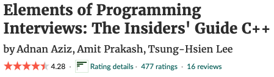
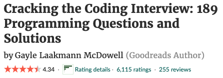
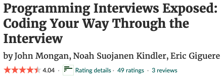
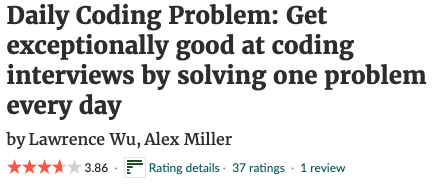
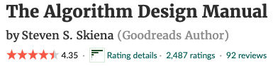

When it come to learning my go to devices are books over electronics.
Not only reading from books give your eyes a break from the computer light after long hours of coding
I find that read books gives me a better understanding of the topic and I will retain the information longer.
There are a wide variety of books that can be helpful in the progression in learning computer programming.
I will list the top 10 books that is very useful in aiding to your leaning experience.
This book is one of the greatest books to prepare yourself for programming interview. It is well written
and it is aimed to prepare programmers for interviews for Companies like Apple, Uber, Google, Amazon, and Microsoft.
It is written by the same author who wrote ALGORITHM FOR INTERVIEW. It covers topic like data structures, algorithms, coding, and problems-solving.
GOOD READ REVIEW

This is one of the most read book in the programming world. It cover interview questions from different
programming languages with great practice questions. This book is a bit dated but it is very well used
by big Companies in the tech industries. I recommend this book because the author "Gayle Laakmann" has worked with well known
companies like Google, Apple, and Microsoft.
GOOD READ REVIEW

This book explain the pros and cons of problem solving approach. It explained in details important topics like
puzzles, string, array, coding, algorithms, binary trees, networking, computer science, etc. This book is a great
refresher for basic programming concepts. The puzzles was very interactive.
GOOD READ REVIEW

Beyond the small text, this book is very under-rated. You do not hear nor see a lot of programmers talking
about or reviewing this book. I had the opportunity to read through it and I was not a bad book. It has code
problem solving question that was not to difficult which you can find on leet code. I recommend this book to
a beginner who is looking for a Junior role.
GOOD READ REVIEW

This book contains questions based on algorithms and data structures. It is one of the best book you can
read on algorithms in order to ace the toughest interview questions. The book focuses more on practical implementations
of algorithms than leaning algorithms but needless to say if the author assumes that you may have some experience
with algorithms and data structures hance the reason why you're reading books that prepares you for interviews.
GOOD READ REVIEW

design by NEKEISHA POPE
© copywrite